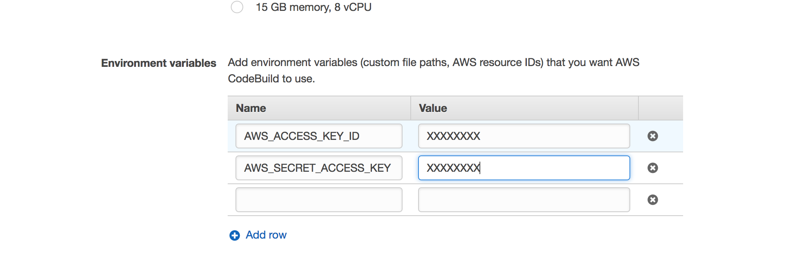

Continuous Delivery and Continous Integration with Serverless, AWS CodeBuild, AWS CodePipeline and API Gateway
TweetOne of the things I like the most when coding, is to have the chance to just fire and forget (i.e: write tests/code, commit, push, and have automatic build and deployment to a staging environment for QA, grab some more coffee and then loop).
Up to now, I mostly used the Jenkins Continuous Integration Server, but a downside is that you have to setup, configure, and keep updated an operating system, its libraries and dependencies, and of course the CI server yourself. And boy, believe me I've been doing this for quite a few years now, and I'd really like to stop bothering about these details.
Also, I've been working a lot with Amazon API Gateway and Amazon Lambda lately, technologies that allows you to go completely serverless, so why not try to do the same for the development, build, and deploy phases?
In this article we're going to see how to use the serverless framework and AWS CodePipeline to implement continuous integration and delivery without using any servers at all and completely in the cloud.
Upload your code to the cloud
For this to work, you have to put your code either in GitHub, Amazon S3, or Amazon CodeCommit (the Amazon Git based Source Control Service).
Most of the time I use GitHub, but Amazon CodeCommit is great if you need private repositories and don't have a paid GitHub account for them. Plus, CodeCommit is a bit cheaper than GitHub for small teams.
Prepare your code for different "stages"
Ideally, you will have different "stages" so you can try new code before putting it in production. So create different branches, one per stage. For example, a branch for "staging", and another one for "production". The idea is to have continuous integration and continuous delivery for each one of those stages as soon as you commit new code to the corresponding branch.
Setup CodeBuild so you can build your job
Once you have your code setup in GitHub, AWS S3, or AWS CodeCommit, create a project in AWS CodeBuild (the Amazon Continuous Integration and Delivery service).
Add a buildspec.yml file to the root directory of your project. This is where you will specify how to run your tests, build your code, generate output artifacts, and deploy your code.
Here's a very simple file to build a NodeJS project by using npm:
The interesting (and customized, project-dependant) parts are the commands in the sections build and post_build.
In the build section you should run any commands that will run your tests, generate coverage information, output artifacts, generate documentation and things like that. In this example, there's a "build" command setup in the package.json file of the project that does all of this.
The post-build section packages the code (once it has been built successfully), then installs the ServerLess Framework, and then deploys the code to the corresponding stage with the deploy command.
You got that right. We are going to run the serverless cli right from the build to deploy our code, and for that to work, you have to configure your AWS credentials in the build job in the "Environment Variables" section inside "Advanced Settings", like this:
If you look closely at the deploy command, you will notice that the stage name is taken from the CODEBUILD_INITIATOR environment variable that will be populated by Amazon CodePipeline every time it triggers the build when detecting a new commit (more on this in the next section).
There are many environment variables that CodeBuild will populate and you can use them in your build stage.
In this case, the variable CODEBUILD_INITIATOR will contain a value like codepipeline/pipeline_name_staging when the build is triggered by AWS CodePipeline, and that's why we have to transform the value of CODEBUILD_INITIATOR with commands like tr and cut.
Setup CodePipeline for Staging and Production environments
We are now almost ready. What's left is to create a pipeline in AWS CodePipeline for every stage where you want to deploy your code.
The name of your pipeline must include the stage, for example my_project_staging (as we stated above, that name is taken from the CODEBUILD_INITIATOR environment variable and used to know the target stage name). And when setting up the source you must specify the corresponding branch for that stage.
The build provider is the job you created in AWS CodeBuild. No deployment should be setup for these pipelines because AWS don't support yet deployment to API Gateway and things like this (you could deploy via a CloudFormation template though, although that's not what this article is about). We are going to deploy ourselves by running a serverless cli command.
That's it!
Congratulations! Now if you commit to a branch where AWS CodePipeline "is listening", your build will be automatically triggered and if successful, your code will be deployed automagically to the corresponding stage. This is great when working with Lambdas being run by API Gateway, CloudWatch, Kinesis, and all of these amazing AWS services. Enjoy :)